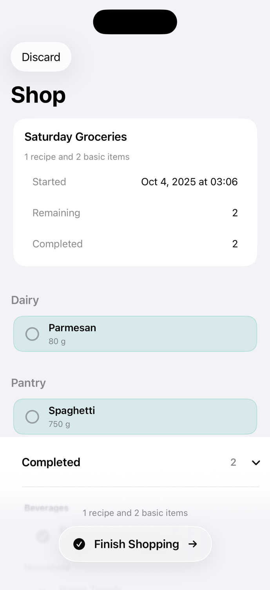

Plan from recipes
Select the meals you want to cook and adjust ingredients before you leave.
Recipes to shopping lists
Plan your weekly shop from recipes and basics, share household libraries with iCloud, and check items off while shopping.

Wocheneinkauf keeps catalog items, recipe ingredients, selected basics, active shopping runs, and history connected in one household library.
Select the meals you want to cook and adjust ingredients before you leave.
Start a shopping run, check off items, remove lines, and finish when you are done.
Invite household members to a shared library through Apple's iCloud sharing.